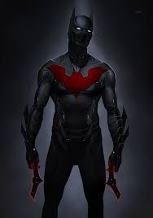

ganre Fantastic
date June 2018
description-Siderman appeared in the early 1960 teenagers in superhero comic books were usually relegated to the role of sidekick to the protagonist the spider man series broke ground by feature peter parks or high school student from Queens behind Spiderman secret identity and with whose self obsession with rejection inadequacy and loveliness young readers could relate while spiderman had made all of sidekick unlike previous teen heroes such as bucky and robin spiderman had no superhero mentor like captain america and batman he thus had to learn for himself that with great power there must also come great responsibilty a line included in a text box in the final panel of the first spiderman story but later retroactively attributed to his guardian the uncle ben.
ganre Fantastic
date November 2013
Superman is a fictional superhero created by writer Jerry Siegel and artist Joe Shuster. He first appeared in Action Comics #1, a comic book published on April 18, 1938. He appears regularly in American comic books published by DC Comics, and has been adapted to radio shows, newspaper strips, television shows, movies, and video games. Superman was born on the planet Krypton, and as a baby named Kal-El, was sent to Earth in a small spaceship by his scientist father Jor-El, moments before Krypton was destroyed in a natural cataclysm. His ship landed in the American countryside, where he was discovered and adopted by Jonathan and Martha Kent, a farming couple. They named him Clark. Clark displayed various superhuman abilities such as incredible strength and impervious skin, and his foster parents advised him to use his gifts for the people ,.
ganre Fanatstic
date March 2010
Iron Man 2 is a 2010 American superhero film based on the Marvel Comics character Iron Man, produced by Marvel Studios and distributed by Paramount Pictures. It is the sequel to 2008's Iron Man, and is the third film in the Marvel Cinematic Universe (MCU). Directed by Jon Favreau and written by Justin Theroux, the film stars Robert Downey Jr. as Tony Stark / Iron Man, alongside Gwyneth Paltrow, Don Cheadle, Scarlett Johansson, Sam Rockwell, Mickey Rourke, and Samuel L. Jackson. Six months after the events of Iron Man, Tony Stark is resisting calls by the United States government to hand over the Iron Man technology while also combating his declining health from his number.
ganre Fantastic
date August 2015
Batman is a fictional superhero appearing in American comic books published by DC Comics. The character was created by artist Bob Kane and writer Bill Finger, and first appeared in Detective Comics #27, in 1939. Originally named the "Bat-Man", the character is also referred to by such epithets as the Caped Crusader, the Dark Knight, and the World's Greatest Detective. Batman's secret identity is Bruce Wayne, a wealthy American playboy, philanthropist, and owner of Wayne Enterprises. After witnessing the murder of his parents Dr. Thomas Wayne and Martha Wayne as a child, he swore vengeance against criminals, an oath tempered by a sense of justice. Bruce Wayne trains himself physically and intellectually and crafts a bat-inspired persona to fight crime. Batman operates in the fictional Gotham City with assistance from various supporting characters, including his butler Alfred, police commissioner Gordon, and vigilant borget.
